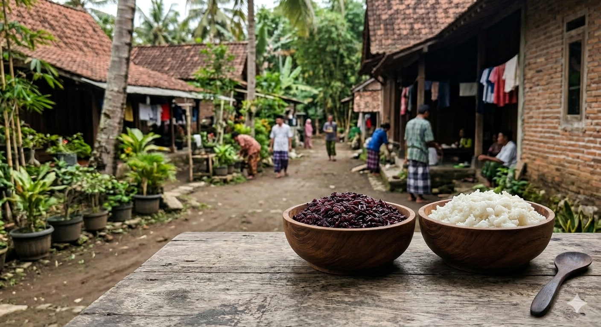

Profile
BRANDON WIJAYA
9B/2
SANTA ANGELA

Pada penelitian kali ini saya akan mencoba membedakan rasa, aroma, dan tekstur pada tape ketan hitam dan ketan putih dengan media penyimpanan yang berbeda.
1. Mencuci Beras Ketan
2. Beras ketan dicuci menggunakan air bersih 2–3 kali.
3. Merendam Beras Ketan
4. Direndam selama 2–3 jam.
5. Meniriskan Beras Ketan
6. Beras ketan ditiriskan.
7. Mengukus Beras Ketan
8. Dikukus selama 30–40 menit.
9. Mendinginkan Ketan
10. Didinginkan sebelum diberi ragi.
11. Menghaluskan Ragi
12. Ragi ditaburkan merata.
13. Menyiapkan Daun Pisang
14. Daun pisang dibersihkan.
15. Membungkus Ketan
16. Ketan dibungkus daun pisang.
17. Proses Fermentasi
18. Disimpan 2–3 hari.
19. Tape Siap Dikonsumsi
BRANDON WIJAYA
9B/2
SANTA ANGELA